4130B40 OUTLET PIPE FROM PUMP TO POWER STEERING CASE R R
- Path
- Procedures > 41 STEERING UNIT > 4130 POWER STEERING > 4130B POWER STEERING HYDRAULIC SYTEM > 4130B40 OUTLET PIPE FROM PUMP TO POWER STEERING CASE R R
- Kind
- repair procedure (removal / refitting; the operation number is the code)
- Applies to
- all engines; all production periods
- Interactive page
- https://sloeber94.github.io/elrnDB-aGt/en/#/125001415
Applies to: engines: 1.8 T.SPARK, 2.0 JTS; all production periods
 Removing
Removing
 Refitting
RefittingPosition the vehicle on the ramp
Ensure that the ignition key is in the OFF position, then disconnect the negative battery terminal (-).
Name | Connector | |
|---|---|---|
- | Battery |
Proceed with removal
Op. 4450B12 FRONT OR REAR WHEELS (TWO) - R+R
Proceed with removal
Drain the power steering fluid from the reservoir using a suitable syringe.
Op. 1016A40 IGNITION COIL COVER ON CYLINDER HEAD- R+R
1. Connect the quick-release attachment for the fuel vapour recovery pipe (1a) and move aside after releasing from band (1b) on the power assisted steering fluid reservoir.
2. Release the coolant return pipe to the coolant reservoir from the bands on the modular intake manifold.
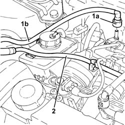
Applies to: engines: 1.8 T.SPARK, 2.0 JTS; all production periods
1. Disconnect the electrical connection from the enablement solenoid of the changeover device actuator.
Name | Connector | |
|---|---|---|
1 | Variable geometry control solenoid |
2. Disconnect the vacuum intake pipe from the air flow switching device actuator and release it from the fastening.
3. Disconnect the linkage for the air flow switching control actuator.
4. Undo the bolts (4a) and remove the air flow switching control actuator (4b).
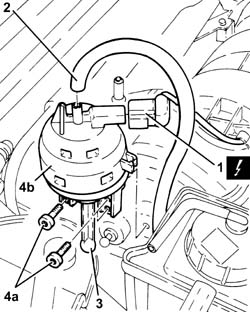
Applies to: engines: 1.8 T.SPARK, 2.0 JTS; all production periods
Release the power steering fluid delivery and return pipes from the connection clip.
1. Undo the bolts (1a) and move the power assisted steering fluid reservoir (1b) aside.
2. Loosen the bands and disconnect the coolant supply and return pipes from the power steering fluid reservoir.
3. Remove the power steering fluid reservoir.
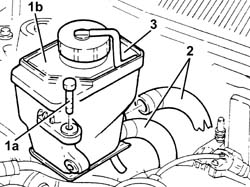
Applies to: engines: 1.8 T.SPARK, 2.0 JTS; all production periods
1. Unscrew the connector and disconnect the delivery pipe from pump to power steering box, pump side.
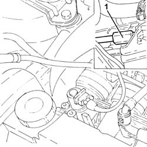
Applies to: engines: 1.8 T.SPARK, 2.0 JTS; all production periods
1. Position a suitable bracket to support the power unit safely.
2. Fit the tool (2a), complete with support blocks (2b) and connect to the bracket fitted previously using link (2c).
 | Name | Country |
|---|---|---|
2a | Crossmember | 1.820.581.000 |
| Name | Country |
|---|---|---|
2b | Support mountings | 1.870.650.000 |
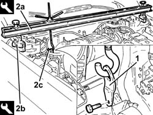
Applies to: engines: 1.8 T.SPARK, 2.0 JTS; all production periods
Drain the air conditioner coolant circuit
Op. 0010T84 COOLANT FOR AIR CONDITIONING SYSTEM DEHYDRATE AND RECHARGE.
Proceed with removal
Op. 7055B54 UNDER-ENGINE GUARD - R R
Proceed with removal
Proceed with removal
Op. 5040A20 AIR CONDITIONER COMPRESSOR - R+R - INCLUDES FLUID LEVEL CHECK AND TOP UP IF NECESSARY
Proceed with removal
Proceed with removal
Op. 5040A26 COMPRESSOR MOUNT - R R
Proceed with removal
1. Unscrew the connector (1a), disconnect the outlet hose from the power steering box (1b) and move aside.
Op. 1076A48 CATALYTIC CONVERTER HEAT SHIELD - R R
2. Undo the connector (2a) and disconnect the supply pipe from the pump to the power assisted steering box (2b), power assisted steering box side.
3. Undo the nut (3a) fixing the gearbox cables mounting bracket (3b) to the power assisted steering box.
Op. 1080B62 CATALYTIC CONVERTER - R + R
Op. 1008A44 REAR RIGID MOUNT - R R
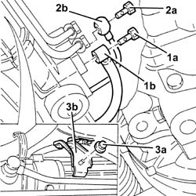
Applies to: engines: 1.8 T.SPARK, 2.0 JTS; all production periods
1. Undo the bolts securing the power steering box to the front suspension crossmember.
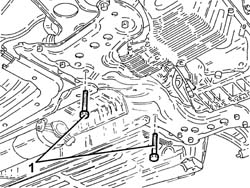
Applies to: engines: 1.8 T.SPARK, 2.0 JTS; all production periods
Connect the supply pipe between pump and power steering box to the bands on the power steering box.
1. Release the supply pipe from pump to power steering box complete with bracket from the power steering pump.
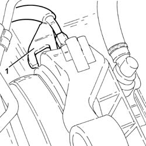
Applies to: engines: 1.8 T.SPARK, 2.0 JTS; all production periods
1. Undo the front nuts securing the mounting for the gear and handbrake levers to the body.
2. Recover the plates.
3. Undo the front bolts securing the mounting for the gear and handbrake levers to the body.
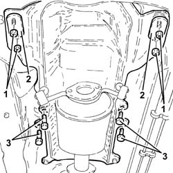
Applies to: engines: 1.8 T.SPARK, 2.0 JTS; all production periods
1. Undo the nuts (1a) and disconnect the front anti-roll bar joints (1b) from the shock absorber fork.
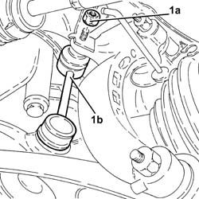
Applies to: engines: 1.8 T.SPARK, 2.0 JTS; all production periods
1. Position a hydraulic jack fitted with a suitable support under the front suspension crossmember.
2. Unscrew rear bolts (2a) and side bolts (2b) and lower the beam securing the front suspension to the body (2c) as much as necessary.
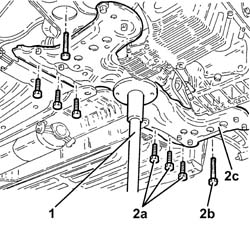
Applies to: engines: 1.8 T.SPARK, 2.0 JTS; all production periods
1. Remove the delivery pipe from pump to power steering box.
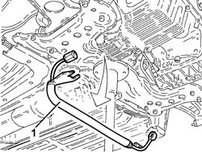
Applies to: engines: 1.8 T.SPARK, 2.0 JTS; all production periods
Refitting
RemovingRefit in its seating the delivery pipe from pump to power steering box.
1. Refit the front suspension beam (1a) using the hydraulic jack and secure by tightening side bolts (1b) and rear bolts (1c) to the specified torque.
 | Fastening | Component | Ø | Value (daNm) |
|---|---|---|---|---|
1b | Side bolt | ENGINE OR ROD ANCHORAGE BEAM | M12 | (Bodyshell side) 10.8 ÷ 13.2 |
| Fastening | Component | Ø | Value (daNm) |
|---|---|---|---|---|
1c | Rear bolt | ENGINE OR ROD ANCHORAGE BEAM | M10 | (Bodyshell side) 8.1 ÷ 9.9 |
| Fastening | Component | Ø | Value (daNm) |
|---|---|---|---|---|
1c | Rear bolt | ENGINE OR ROD ANCHORAGE BEAM | M12 | (Bodyshell side) 10.8 ÷ 13.2 |
2. Remove the hydraulic jack for supporting the front suspension crossmember.
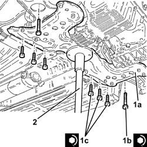
Applies to: engines: 1.8 T.SPARK, 2.0 JTS; all production periods
1. Connect the front anti-roll bar joints (1a) to the shock absorber fork and tighten the relevant nuts (1b) to the specified torque.
| Fastening | Component | Ø | Value (daNm) |
|---|---|---|---|---|
1b | Nut | FRONT ANTI-ROLL BAR JOINTS | M10 | (Front shock absorber fork side) 4.1 ÷ 5.0 |
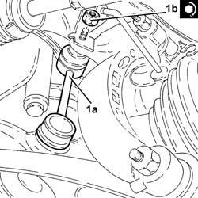
Applies to: engines: 1.8 T.SPARK, 2.0 JTS; all production periods
Tighten the front bolts securing the gear and handbrake levers to the body.
Refit the plates in their seats and tighten the front nuts securing the gear and handbrake lever mount to the body.
Connect the supply pipe between pump and power steering box using the bands on the power steering box.
1. Tighten the bolts securing the power steering box to the front suspension crossmember.
| Fastening | Component | Ø | Value (daNm) |
|---|---|---|---|---|
1 | Bolt | POWER STEERING BOX | M14 | (Front suspension crossmember side) 11.7 ÷ 14.3 |
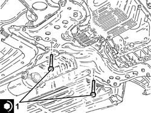
Applies to: engines: 1.8 T.SPARK, 2.0 JTS; all production periods
Tighten the nut fixing the gearbox control cables mounting bracke to the power assisted steering box.
1. Connect the supply pipe from pump to power steering box (1a), power steering box side, and tighten the connector (1b) to the specified torque.
| Fastening | Component | Ø | Value (daNm) |
|---|---|---|---|---|
1b | Connector | PIPE BTWN PUMP + POWER STEERING BOX | M14 | (Power assisted steering box side) 3.6 ÷ 4.4 |
2. Connect the outlet pipe from the pump to the power steering box (2a) and tighten the connector (2b) to the recommended torque.
| Fastening | Component | Ø | Value (daNm) |
|---|---|---|---|---|
2b | Connector | PIPE FROM POWER STEERING BOX/EXCHANGER | M12 | (Power steering box side) 2.7 ÷ 3.3 |
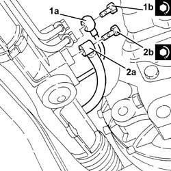
Applies to: engines: 1.8 T.SPARK, 2.0 JTS; all production periods
Proceed with refitting
Op. 1008A44 REAR RIGID MOUNT - R R.
Proceed with refitting
Op. 1080B62 CATALYTIC CONVERTER - R + R.
Proceed with refitting
Op. 1076A48 CATALYTIC CONVERTER HEAT SHIELD - R R.
Proceed with refitting
Op. 5040A26 COMPRESSOR MOUNT - R R.
Proceed with refitting
Op. 5040A20 AIR CONDITIONER COMPRESSOR - R+R - INCLUDES FLUID LEVEL CHECK AND TOP UP IF NECESSARY.
Proceed with refitting
Op. 7055B54 UNDER-ENGINE GUARD - R R.
Remove the safety tools used for supporting the power unit.
1. Connect the supply pipe from the power assisted steering pump to the box, pump side and tighten the connector to the recommended torque.
| Fastening | Component | Ø | Value (daNm) |
|---|---|---|---|---|
1 | Connector | PIPE BTWN PUMP + POWER STEERING BOX | M16 | (Power assisted steering pump side) 4.5 ÷ 5.5 |
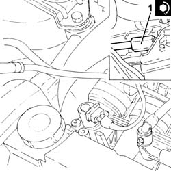
Applies to: engines: 1.8 T.SPARK, 2.0 JTS; all production periods
Connect the delivery and return pipes to the power steering reservoir and tighten the bands.
Refit in its seating the power steering fluid reservoir and secure it with its bolts.
Fit the air flow switching device actuator in its seating and secure it using the bolts.
Connect the linkage for the air flow switching control actuator.
Connect the air flow switching control actuator vacuum intake pipe and secure it to the fastening.
Connect the electrical connection from the enablement solenoid of the changeover device actuator.
Secure the rigid return pipe to the coolant reservoir to the modular intake manifold.
Place the fuel vapour recovery pipe in its seating, secure it with the band to the power steering fluid reservoir and connect the relevant quick-release fitting.
Proceed with removal
Op. 1016A40 IGNITION COIL COVER ON CYLINDER HEAD- R+R
Proceed with removal
Connect the negative (-) battery terminal
Op. 4450B12 FRONT OR REAR WHEELS (TWO) - R+R
Fill the air conditioner coolant circuit
.
Proceed with refitting
Op. 0010T84 COOLANT FOR AIR CONDITIONING SYSTEM DEHYDRATE AND RECHARGE.
Remove the car from the ramps.
Op. 0010T71 POWER STEERING FLUID CHECK LEVEL AND TOP UP IF NECESSARY
Applies to: engines: 3.2 V6; all production periods
Removing
RefittingPosition the vehicle on the ramp
Drain the power steering fluid from the reservoir using a suitable syringe.
Proceed with removal
Op. 4450B12 FRONT OR REAR WHEELS (TWO) - R+R
Proceed with removal
Proceed with removal
Op. 7055B54 UNDER-ENGINE GUARD - R R
Proceed with removal
1. Undo the nuts (1a) and disconnect the front anti-roll bar joints (1b) from the shock absorber fork.
Op. 1076B82 LEFT EXHASUST PIPE BETWEEN CATALYTIC PRECONVERTER AND CONVERTER R R
Op. 1076B84 RIGHT EXHAUST PIPE BETWEEN CARALYTIC PRECONVERTER AND CONVERTER R R
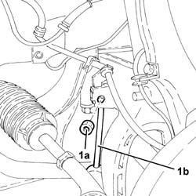
Applies to: engines: 3.2 V6; all production periods
Proceed with removal
Op. 1008A44 REAR RIGID MOUNT - R R
1. Undo the nuts (1a) and remove the heat shield (1b).
2. Undo the bolts (2a) and remove the power unit rigid rear mounting (2b).
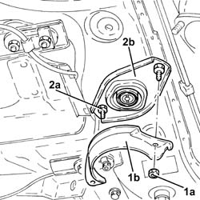
Applies to: engines: 3.2 V6; all production periods
1. Undo the bolts (1a) and remove the underbody reinforcements (1b).
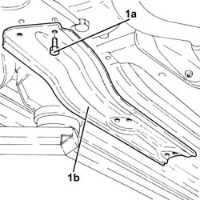
Applies to: engines: 3.2 V6; all production periods
1. Undo front bolts (1a) and nuts (1b) fixing the manual gear lever mounting.
2. Recover the plates.
3. Slacken the rear bolts fixing the manual gear lever mounting.
4. Lower the manual gear lever mounting at the front.
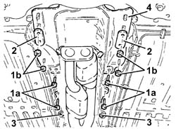
Applies to: engines: 3.2 V6; all production periods
1. Support the front suspension crossmember using a hydraulic jack (1a) fitted with a suitable flange (1b).
2. Undo the bolts securing the power steering box to the front suspension crossmember.
3. Undo the rear bolts fixing the front suspension crossmember to the bodyshell.
4. Undo the side bolts fixing the front suspension crossmember to the bodyshell.
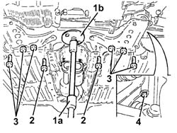
Applies to: engines: 3.2 V6; all production periods
Release the power assisted steering system pipes from the fastening on the front suspension beam.
Lower the front suspension beam using the hydraulic jack as necessary.
1. Undo the connectors (1a) and disconnect the fluid inlet and outlet pipes from power steering box (1b).
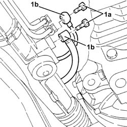
Applies to: engines: 3.2 V6; all production periods
Release the supply pipe from the pump to the steering box from the retaining band on the power steering box.
1. Undo bolts (1a) and remove rear bracket (1b) supporting the power steering pipes.
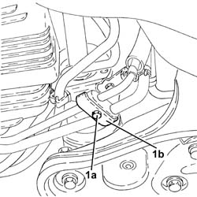
Applies to: engines: 3.2 V6; all production periods
1. Undo the nut (1a) and remove the front bracket (1b) supporting the power steering pipes.
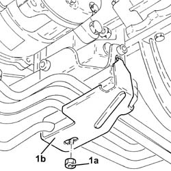
Applies to: engines: 3.2 V6; all production periods
1. Undo the connector (1a) and disconnect the delivery pipe from pump to power steering box (1b), pump side.
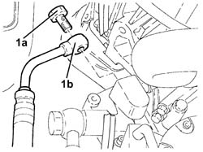
Applies to: engines: 3.2 V6; all production periods
1. Remove the delivery pipe from pump to power steering box, releasing from the rubber mounts.
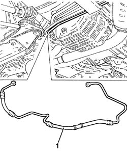
Applies to: engines: 3.2 V6; all production periods
Refitting
RemovingPlace the supply pipe from the pump to the power assisted steering box back in its housing and secure it to the rubber mounts.
1. Connect the delivery pipe from pump to power steering box (1a), and tighten the connector (1b) to the specified torque.
| Fastening | Component | Ø | Value (daNm) |
|---|---|---|---|---|
1b | Connector | PIPE BTWN PUMP + POWER STEERING BOX | M16 | (Power assisted steering pump side) 4.5 ÷ 5.5 |
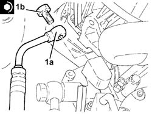
Applies to: engines: 3.2 V6; all production periods
Refit the front bracket supporting the engine oil/power steering pipes back in its seating and secure it with the nut.
Place the power assisted steering pipes rear mounting bracket back in its housing and secure with the bolt.
Secure the supply pipe from the pump to the steering box to the retaining band on the power steering box.
1. Connect the supply pipe from pump to power steering box (1a), power steering box side, and tighten the connector (1b) to the specified torque.
| Fastening | Component | Ø | Value (daNm) |
|---|---|---|---|---|
1b | Connector | PIPE BTWN PUMP + POWER STEERING BOX | M14 | (Power assisted steering box side) 3.6 ÷ 4.4 |
2. Connect the rubber return hose from power steering box to rigid pipe (2a), power steering box side, and tighten the connector (2b) to the recommended torque.
| Fastening | Component | Ø | Value (daNm) |
|---|---|---|---|---|
2b | Connector | POWER STEERING/EXCHANGE BOX RUBBER HOSE | M12 | (Power steering box side) 2.8 - 3.2 |
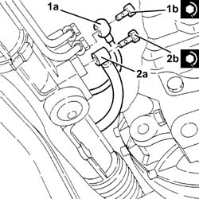
Applies to: engines: 3.2 V6; all production periods
Replace the front suspension crossmember using the hydraulic jack.
Secure the power steering system pipes to the fastening on the front suspension beam.
1. Tighten the side bolts securing the front suspension crossmember to the bodyshell to the recommended torque.
| Fastening | Component | Ø | Value (daNm) |
|---|---|---|---|---|
1 | Side bolt | ENGINE OR ROD ANCHORAGE BEAM | M12 | (Bodyshell side) 10.8 ÷ 13.2 |
2. Tighten the rear bolts securing the front suspension crossmember to the bodyshell to the recommended torque.
| Fastening | Component | Ø | Value (daNm) |
|---|---|---|---|---|
2 | Rear bolt | ENGINE OR ROD ANCHORAGE BEAM | M10 | (Bodyshell side) 8.1 ÷ 9.9 |
| Fastening | Component | Ø | Value (daNm) |
|---|---|---|---|---|
2 | Rear bolt | ENGINE OR ROD ANCHORAGE BEAM | M12 | (Bodyshell side) 10.8 ÷ 13.2 |
3. Tighten the bolts securing the power steering box to the front suspension crossmember to the specified torque.
| Fastening | Component | Ø | Value (daNm) |
|---|---|---|---|---|
3 | Bolt | POWER STEERING BOX | M14 | (Front suspension crossmember side) 11.7 ÷ 14.3 |
4. Remove the hydraulic jack (4a) fitted with a suitable flange (4b) for supporting the front suspension crossmember.
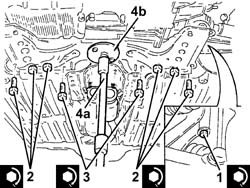
Applies to: engines: 3.2 V6; all production periods
Refit the handbrake control mount and secure with bolts and nuts.
Place the underbody reinforcements back in their housings and secure them with the bolts.
1. Refit the gearbox side power unit rear rigid support (1a) in its seating and tighten the bolts (1b) to the specified torque.
| Fastening | Component | Ø | Value (daNm) |
|---|---|---|---|---|
1b | Bolt | INTERM RUBBER MOUNT | M8 | (Front suspension crossmember side) 3.2 ÷ 3.9 |
2. Place the heat shield (2a) back in its housing and secure it using the nuts (2b).
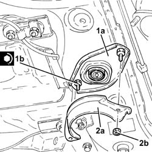
Applies to: engines: 3.2 V6; all production periods
Proceed with refitting
Op. 1008A44 REAR RIGID MOUNT - R R.
1. Connect the front suspension anti-roll bar joints (1a) to the front shock absorber forks and secure them tightening the nuts (1b) to the recommended torque.
| Fastening | Component | Ø | Value (daNm) |
|---|---|---|---|---|
1b | Nut | FRONT ANTI-ROLL BAR JOINTS | M10 | (Front shock absorber fork side) 4.1 ÷ 5.0 |
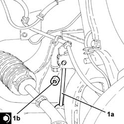
Applies to: engines: 3.2 V6; all production periods
Proceed with refitting
Op. 1076B84 RIGHT EXHAUST PIPE BETWEEN CARALYTIC PRECONVERTER AND CONVERTER R R.
Proceed with refitting
Op. 1076B82 LEFT EXHASUST PIPE BETWEEN CATALYTIC PRECONVERTER AND CONVERTER R R.
Proceed with refitting
Op. 7055B54 UNDER-ENGINE GUARD - R R.
Proceed with refitting
Op. 4450B12 FRONT OR REAR WHEELS (TWO) - R+R.
Proceed with refitting
Op. 0010T71 POWER STEERING FLUID CHECK LEVEL AND TOP UP IF NECESSARY.
Remove the car from the ramps.
Applies to: engines: 1.9 JTD 16V; all production periods
Removing
RefittingPosition the vehicle on the ramp
Proceed with removal
- 1016A10 sound-proofing cover - r + r
Proceed with removal
Remove the power steering fluid reservoir cap and drain the fluid using a suitable syringe.
Refit the brake fluid reservoir cap.
Proceed with removal
1. Undo the lower bolt for the engine oil dipstick pipe.
Op. 7055B54 UNDER-ENGINE GUARD - R R
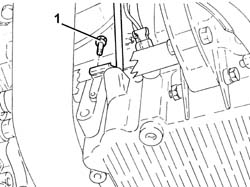
Applies to: engines: 1.9 JTD 16V; all production periods
1. Undo the bolts (1a) and remove the power unit reaction rod (1b).
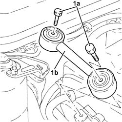
Applies to: engines: 1.9 JTD 16V; all production periods
1. Disconnect the electrical connection shown from the diesel electronic injection system control unit.
Name | Connector | |
|---|---|---|
1 | Engine management control unit |
2. Disconnect the front engine coupling.
Name | Connector | |
|---|---|---|
2 | Front/engine connection |
Release the electrical wiring from the securing bands and move it.
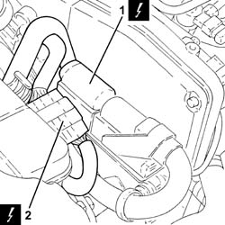
Applies to: engines: 1.9 JTD 16V; all production periods
1. Undo the upper bolt fixing the engine oil dipstick tube to the pressure pump mounting.
2. Remove the tube for the engine oil dipstick releasing it from the fastenings on the electrical wiring.
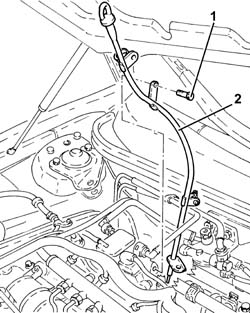
Applies to: engines: 1.9 JTD 16V; all production periods
1. Undo the connector (1a) and disconnect the delivery pipe from pump to power steering box (1b), pump side.
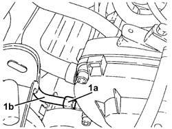
Applies to: engines: 1.9 JTD 16V; all production periods
1. Undo the connector (1a) and disconnect the delivery pipe from pump to power steering box (1b), steering box side.
2. Release the supply pipe from the pump to the steering box from the retaining band on the power steering box.
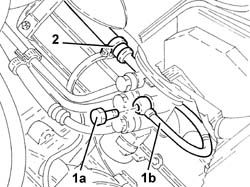
Applies to: engines: 1.9 JTD 16V; all production periods
1. Remove the delivery pipe from pump to power steering box.
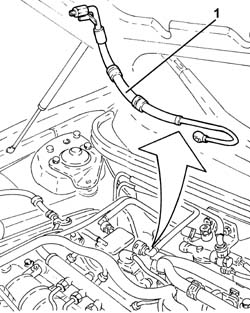
Applies to: engines: 1.9 JTD 16V; all production periods
Refitting
RemovingRefit in its seating the delivery pipe from pump to power steering box.
1. Secure the supply pipe from the pump to the steering box to the retaining band on the power steering box.
2. Connect the supply pipe from the pump to the power assisted steering box (2a), power assisted steering box side, and tighten the connector (2b) to the recommended torque.
| Fastening | Component | Ø | Value (daNm) |
|---|---|---|---|---|
2b | Connector | PIPE BTWN PUMP + POWER STEERING BOX | M14 | (Power assisted steering box side) 3.6 ÷ 4.4 |
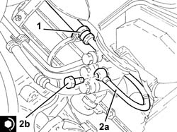
Applies to: engines: 1.9 JTD 16V; all production periods
1. Connect the delivery pipe from pump to power steering box (1a), steering pump side, and tighten the connector (1b) to the specified torque.
| Fastening | Component | Ø | Value (daNm) |
|---|---|---|---|---|
1b | Connector | PIPE BTWN PUMP + POWER STEERING BOX | M16 | (Power assisted steering pump side) 4.5 ÷ 5.5 |
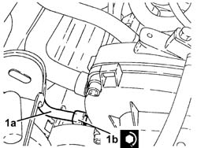
Applies to: engines: 1.9 JTD 16V; all production periods
Place the tube for the engine oil dipstick back in its housing, and secure it to the electrical wiring using the bands.
Tighten the upper bolt fixing the engine oil dipstick pipe to the pressure pump mounting.
Place the electrical wiring back in its seating and fix it to the bands.
Connect the front engine coupling.
Connect the electrical connection to the diesel electronic injection control unit.
1. Place the power unit reaction rod (1a) back in its housing and fix it tightening the bolts (1b) to the recommended torque.
| Fastening | Component | Ø | Value (daNm) |
|---|---|---|---|---|
1b | Bolt | REACTION ROD | M10 | 4.5 ÷ 5.5 |
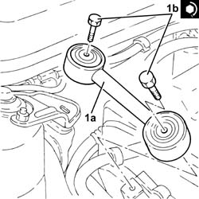
Applies to: engines: 1.9 JTD 16V; all production periods
Tighten the lower bolt fixing the engine oil dipstick pipe.
Proceed with refitting
Proceed with refitting
Op. 0010T71 POWER STEERING FLUID CHECK LEVEL AND TOP UP IF NECESSARY.
Proceed with refitting
Op. 7055B54 UNDER-ENGINE GUARD - R R.
Proceed with refitting
- 1016A10 sound-proofing cover - r + r
.
Remove the car from the ramps.
Topics linked from this page (17)
- 0010T71 POWER STEERING FLUID CHECK LEVEL AND TOP UP IF NECESSARY
- 0010T84 COOLANT FOR AIR CONDITIONING SYSTEM DEHYDRATE AND RECHARGE
- 1008A44 REAR RIGID MOUNT - R R
- 1016A40 IGNITION COIL COVER ON CYLINDER HEAD- R+R
- 1076A48 CATALYTIC CONVERTER HEAT SHIELD - R R
- 1076B82 LEFT EXHASUST PIPE BETWEEN CATALYTIC PRECONVERTER AND CONVERTER R R
- 1076B84 RIGHT EXHAUST PIPE BETWEEN CARALYTIC PRECONVERTER AND CONVERTER R R
- 1080B62 CATALYTIC CONVERTER - R + R
- 4450B12 FRONT OR REAR WHEELS (TWO) - R+R
- 5040A20 AIR CONDITIONER COMPRESSOR - R+R - INCLUDES FLUID LEVEL CHECK AND TOP UP IF NECESSARY
- 5040A26 COMPRESSOR MOUNT - R R
- 5530B10 BATTERY - R+R
- 7055B54 UNDER-ENGINE GUARD - R R
- A1B Battery ( BATTERY NEGATIVE )
- D4 Front/engine connection
- L15 Variable geometry control solenoid
- M10B Engine management control unit ( Connectors )